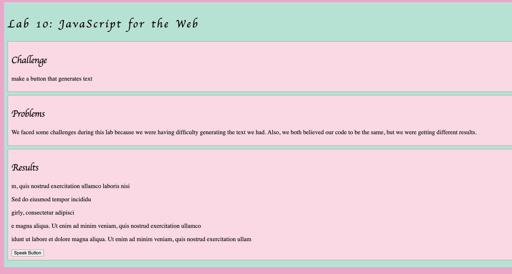
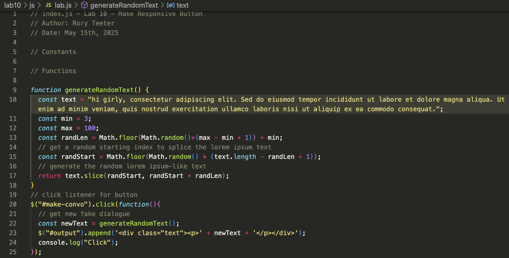

Lab 14: Debugging Tools and Strategies
Challenge
The challenge of this lab was to review all our past labs and identify any potential issues, then address and resolve them. We were lucky enough only to have one bug-filled lab.
Problems
The problem with this lab was figuring out what was causing the bug, but after using some of the debugging tools we learned in class, we were able to find out why our code wasn’t connecting.
Results of Debugging
 Our button wasn't working at all. So we were able to get the button to click and produce text. We were able to use Wes's lab as guidance as to what was bugged.